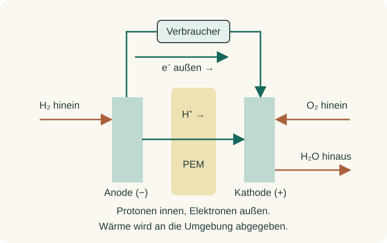
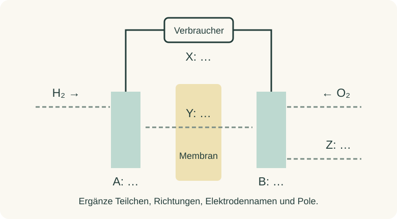

Informieren
Erklärung und Beispiel öffnen
In einer Wasserstoff-Sauerstoff-Brennstoffzelle läuft die Reaktion zu Wasser räumlich getrennt an zwei Elektroden ab. Das folgende Modell beschreibt eine PEM-Zelle mit protonenleitender Membran. Andere Brennstoffzellentypen können andere bewegliche Ionen besitzen; ihre Teilgleichungen sehen deshalb anders aus.

An der Anode (−) wird Wasserstoff am Katalysator oxidiert: 2 H2 → 4 H+ + 4 e−. Die Protonen werden durch die Membran transportiert. Die Elektronen nehmen den äußeren Weg durch den Verbraucher; die Membran leitet sie im Modell nicht.
An der Kathode (+) reagiert Sauerstoff unter Aufnahme von Elektronen und Protonen zu Wasser: O2 + 4 H+ + 4 e− → 2 H2O. Addiert man beide Teilgleichungen, erhält man 2 H2 + O2 → 2 H2O. Die Protonen und Elektronen erscheinen nicht in der Gesamtgleichung, weil sie in der einen Teilreaktion entstehen und in der anderen verbraucht werden.
Beispiel zur Bilanz: Für zwei umgesetzte H2-Moleküle werden vier Elektronen im äußeren Stromkreis übertragen; zugleich werden vier Protonen durch die Membran transportiert. An der Kathode reagiert dazu ein O2-Molekül. Eine H2-Portion benötigt deshalb die halbe Stoffmenge O2. Diese Bilanz beschreibt Mengenverhältnisse, keinen realen Bauplan.
Der Katalysator ermöglicht eine ausreichende Reaktionsgeschwindigkeit, liefert aber keine Energie und wird in der idealisierten Gesamtreaktion nicht verbraucht. Die chemische Energie der zugeführten Stoffe wird teilweise als elektrische Energie und teilweise als Wärme abgegeben. An der idealen H2/O2-Zelle entsteht kein CO2; eine Aussage über die gesamte Klimabilanz erfordert zusätzlich die Herstellung und Bereitstellung der Stoffe.
A · Stoff- und Ladungswege rekonstruieren

- Benenne A und B mit Elektrodenname und Polung.
- Bestimme, was auf Weg X und Y transportiert wird, zeichne die Richtung ein und benenne Produkt Z.
- Stelle die beiden Teilgleichungen und die Gesamtgleichung auf. Kontrolliere Atome und Ladungen.
Hilfe 1
Wasserstoff gibt Elektronen ab; Sauerstoff nimmt sie in der Reaktion zu Wasser auf. Die Anode ist immer der Ort der Oxidation.
Hilfe 2
Links: 2 H2 → 4 H+ + 4 e−. Außen müssen die abgegebenen Elektronen zur rechten Elektrode gelangen; durch eine PEM wandern Protonen. Ergänze rechts O2, H+ und e− zu Wasser.
Musterlösung
A ist die Anode (−), B die Kathode (+). Weg X transportiert Elektronen außen von A durch den Verbraucher nach B. Weg Y transportiert Protonen von A durch die Membran nach B. Z ist Wasser; zusätzlich muss Wärme abgeführt werden.
Anode: 2 H2 → 4 H+ + 4 e−. Links und rechts stehen vier H-Atome; rechts ist die Gesamtladung +4 − 4 = 0.
Kathode: O2 + 4 H+ + 4 e− → 2 H2O. Jeweils vier H-Atome und zwei O-Atome; beide Seiten insgesamt ungeladen.
Nach Kürzen von H+ und e−: 2 H2 + O2 → 2 H2O. Der äußere Elektronenweg ist nicht mit der entgegengesetzten technischen Stromrichtung gleichzusetzen.
B · Drei Erklärungen berichtigen
Prüfe die Aussagen. Formuliere jeweils eine korrigierte Erklärung mit Begründung.
- „Elektronen und Protonen wandern gemeinsam durch die PEM-Membran. So entsteht Strom im Verbraucher.“
- „Der Sauerstoff wandert von der Kathode durch die Membran zur Anode und reagiert dort vollständig mit Wasserstoff.“
- „Eine Brennstoffzelle erzeugt keine Abgase mit CO2. Deshalb ist auch die Herstellung ihres Wasserstoffs immer klimaneutral.“
Erkläre zusätzlich im Modell, was mit dem dauerhaften Umsatz geschieht, wenn der äußere Elektronenweg unterbrochen wird.
Hilfe 1
Trenne drei Ebenen: Ladungswege in der Zelle, Ort der Teilreaktionen und die vorgelagerte Energieversorgung. Die Gesamtgleichung verrät nicht, wo die Stoffe hergestellt wurden.
Hilfe 2
PEM steht hier für eine protonenleitende Membran. Elektronen brauchen den äußeren Weg; Sauerstoff reagiert an der Kathode. Ohne äußeren Elektronenfluss kann kein dauerhafter zusammenhängender Ladungstransport stattfinden.
Musterlösung
1 ist falsch: Protonen passieren die Membran, Elektronen fließen außen durch den Verbraucher. Würde die Membran die Elektronen gut leiten, gäbe es einen inneren elektrischen Bypass; der vorgesehene äußere Energieumsatz würde beeinträchtigt.
2 ist falsch: Sauerstoff wird der Kathode zugeführt und dort mit Protonen und Elektronen zu Wasser reduziert. Das vereinfachte Modell setzt eine Trennung der Gasräume voraus. Die Membran ist kein vorgesehener Sauerstoffweg zur Anode.
3 ist ein unzulässiger Schluss: Im idealen H2/O2-Betrieb entsteht Wasser statt CO2. Bei Wasserstofferzeugung, Stromerzeugung, Transport und Anlagenbau können jedoch Treibhausgasemissionen entstehen. Dafür sind eigene Daten nötig.
Bei offenem äußeren Stromkreis können die an der Anode abgegebenen Elektronen nicht dauerhaft zur Kathode gelangen. Nach kurzen Ausgleichsvorgängen kommt der stationäre elektrochemische Umsatz im idealisierten Modell zum Stillstand. Eine messbare Leerlaufspannung kann trotzdem vorhanden sein.
Zurück zur Checkliste
Kannst du den Punkt jetzt an einer eigenen Erklärung oder einer neuen Aufgabe nachweisen? Ordne dich ein: sicher (selbstständig), teils (mit Hilfe) oder offen (noch Lernbedarf). Notiere bei Bedarf, was du noch klären möchtest.
Fachliche Quellen und Modellgrenzen
Fachlicher Abgleich: US Department of Energy: Fuel Cell Basics und Parts of a Fuel Cell. Eigene vereinfachte Darstellung der PEM-Brennstoffzelle; technische Gas-, Wasser- und Wärmeführung sind nicht vollständig abgebildet. Abruf: 09.10.2026.
Hintergrund zur Energieherkunft und den Umwandlungswegen: Umweltbundesamt: Wasserstoff – Schlüssel im künftigen Energiesystem. Die Zahlen auf dieser Seite stammen nicht aus der Quelle: Alle Übungsdaten sind eigens konstruierte Modellannahmen. Keine aktuellen Produkt-, Markt- oder Lebenszykluswerte werden behauptet. Bezug zur Reihe: UE8, Lehrkraftfassung vom 04.10.2026. Abruf: 09.10.2026.